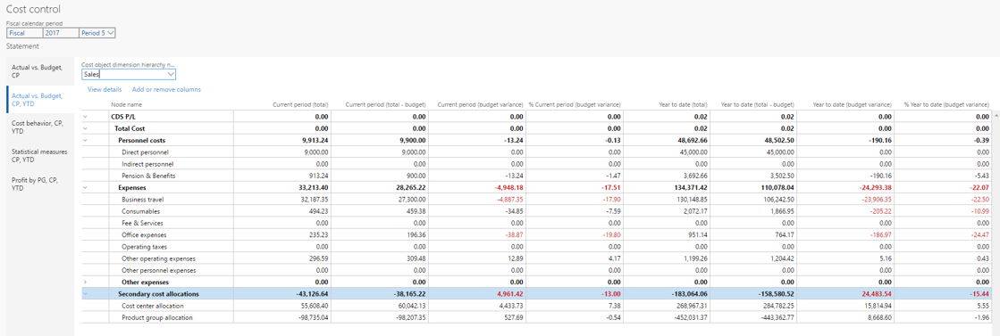
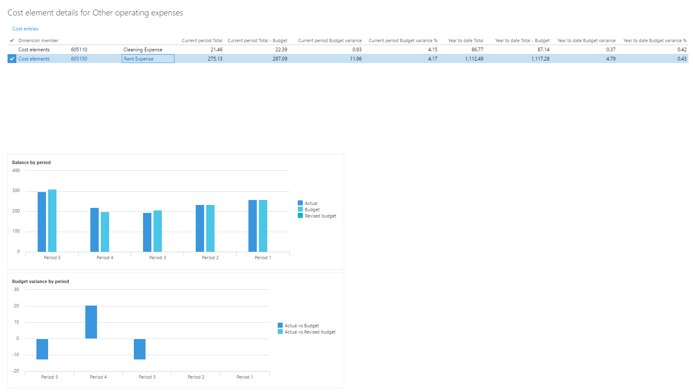
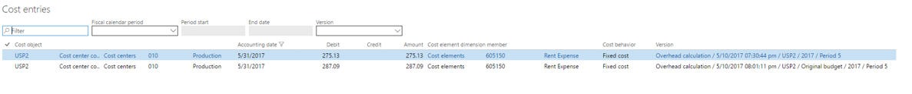
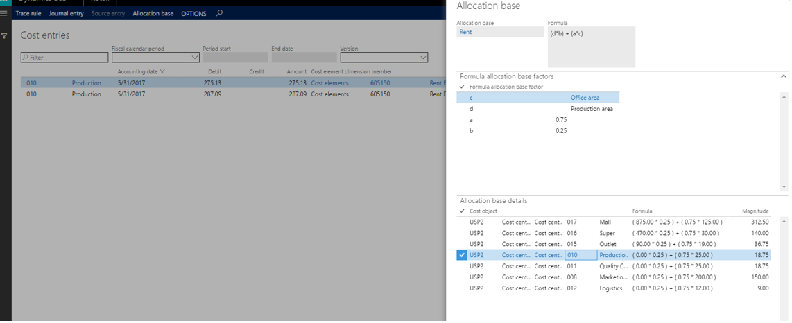

Kostensteuerungs-Arbeitsbereich
Important
Dynamics 365 for Finance and Operations hat sich zu speziell entwickelten Anwendungen entwickelt, mit denen Sie bestimmte Geschäftsfunktionen verwalten können. Weitere Informationen zu diesen Änderungen finden Sie im Dynamics 365-Lizenzierungshandbuch.
Der Arbeitsbereich Kostensteuerung ist ein zentraler Punkt, in dem Manager, die zum Steuern des Kostenträgers des Satzes oder Kostenträger in eine Dimension oder zu Dimensionen (zum Beispiel Kostenstellen und Produktgruppen) zuständig sind, Berichte zugreifen können. Die Berichte im Arbeitsbereich werden vollständig von den Kostenbuchhaltern verwaltet, damit das Layout und die Daten, die für die Berichtserstattung verwendet werden, in der gesamten Organisation konsistent sein können.
Arbeitsbereichskonfiguration für Kostensteuerung
Kostenbuchhalter können so viele Berichtskonfigurationen definieren, wie für die gewünschte Datenanordnung oder das Layout erforderlich. Eine Berichtskonfiguration besteht aus sechs Abschnitten, und jede davon trägt entweder zur Auswahl der Zieldatenanordnung oder dem Layout bei.
Um einen Arbeitsbereich für Kostensteuerung zu konfigurieren, klicken Sie auf Kostenrechnung > Einstellungen > Arbeitsbereichskonfiguration für Kostensteuerung
Allgemein
Auf dem Inforegister Allgemeines können Sie ein eindeutiges Berichtslayout erstellen. Der Name des Berichts ist ein eindeutiger Bezeichner, den Benutzer im Kostensteuerung-Arbeitsbereich erkennen können. Sie können auch angeben, ob der Bericht für Kostenbuchhalter freigegeben oder intern bleiben soll.
| Feld | Beschreibung |
|---|---|
| Name | Geben Sie einen eindeutigen Namen für das Layout ein. |
| Beschreibung | Geben Sie eine detailierte Beschreibung ein. |
| Publiziert | Wenn Sie das Feld auf Ja festlegen, kann ein Benutzer, dem eine der folgenden Rollen zugewiesen wird, den Bericht im Arbeitsbereich Kostensteuerung anzeigen:
|
Datenfilterung
Auf dem Inforegister Datenenfilterung können Sie die Datenengrundlage für den Bericht definieren. Benutzer dieses Berichts werden Werte im Bericht angezeigt, nachdem Daten verarbeitet wurden.
| Feld | Beschreibung |
|---|---|
| Kostenrechnungssachkonto | Das Kostenrechnungssachkonto, auf dem der Bericht basiert. Der Wert wird aus dem Feld Kostenkontrolleinheit abgeleitet. |
| Kostensteuerungseinheit | Der Wert, den Sie auswählen, bestimmt das Kostenrechnungs-Sachkonto und die Kostenobjekte, auf denen dieser Bericht basiert. |
| Statistische Dimensionshierarchie, Kostenelementdimensionshierarchie | Ein Konfigurationssatz des Kostensteuerung-Arbeitsbereichs kann entweder nicht-monetäre oder monetäre Werte melden, aber nicht im gleichen Layout. Wählen Sie einen Wert im Feld Kostenelement-Dimensionshierarchie aus, um monetäre Werte zu melden. Wählen Sie einen Wert im Feld Statistische Dimensionshierarchie aus, um nicht monetäre Werte zu melden. Der Dimensionshierarchiedatensatz, den Sie auswählen, bestimmt die Struktur die Ebenen der Berichtserstellung und Aggregation.[!NOTE] |
| Kostenobjekt-Dimensionshierarchie | Wählen Sie die Dimensionshierarchie der Kostenelementdimension aus, die dem Zweck der Berichterstellung, die Sie definieren, entspricht. |
| Ursprüngliche Budgetversion | Wählen Sie die Budgetversion-ID aus, die als ursprüngliches Budget im Rahmen dieses Berichts dient. |
| Überarbeitete Budgetversion | Wählen Sie die Budgetversion-ID aus, die als überarbeitetes Budget im Rahmen dieses Berichts dient. |
Berechnungsdatensätze zuweisen
Die Gemeinkostenberechnung führt mehrere Berechnungsschritte mit den Quelldaten aus, z. B. Kostenverhaltensklassifizierung, Kostenaufteilung und Kostenzuweisung. Mehrere Gemeinkostenberechnungen können für den gleichen Finanzzeitraum durchgeführt werden, falls fehlende Quelldaten ermittelt werden, oder Regeln aktualisiert werden müssen. Jede Gemeinkostenberechnung wird mit einer eindeutigen Kennung gespeichert. Der Kostenbuchhalter kann eine bestimmte Gemeinkostenberechnungskennung auswählen. Benutzer des Berichts, z. B. Manager, finden die Ergebnisse der obenliegenden Berechnung im Kostensteuerung- Arbeitsbereich.
| Feld | Beschreibung |
|---|---|
| Steuerkalenderperiode | Wählen Sie die Steuerkalenderperiode aus, der eine Gemeinkostenberechnungskennung zugewiesen werden soll.[!NOTE] |
| Tatsächliche Version | Wählen Sie die entsprechende Gemeinkostenberechnungskennnung. |
| Budgetversion | Wählen Sie die entsprechende Gemeinkostenberechnungskennnung. |
| Überarbeitete Budgetversion | Wählen Sie die entsprechende Gemeinkostenberechnungskennnung. |
Finanzzeiträume pro Spalte
Im Inforegister Finanzzeiträume pro Spalte entscheidet der Kostenbuchhalter, welche Steuerperiode im Berichtslayout angezeigt werden soll.
Die Werte in den ausgewählten Spalten werden mit den ausgewählten Werten im Inforegister Finanzzeiträume pro Spalte multipliziert.
| Feld | Beschreibung |
|---|---|
| Aktuelle Periode | Der Saldo des aktuellen Finanzzeitraums wird angezeigt.[!NOTE] |
| Vorherige Periode | Der Saldo des vorherigen Finanzzeitraums wird angezeigt. Verwendete Formel: Laufender Finanzzeitraum – 1 [!NOTE] |
| Seit Jahresbeginn | Der Wert seit Jahresbeginn wird angezeigt. Verwendete Formel: YearToDate (Laufender Finanzzeitraum) [!NOTE] |
| Durchschnitt seit Jahresbeginn | Der Durchschnitt seit Jahresbeginn wird angezeigt. Verwendete Formel: (YearToDate [Laufender Finanzzeitraum]) ÷ (Anzahl [Laufender Finanzzeitraum]) Beispiel
Der Wert Durchschnitt seit Jahresbeginn kann für Kostenelementdimensionsmitglieder und statistische Dimensionsmitglieder berechnet werden. [!NOTE] |
Anzuzeigende Spalten für Kosten
Im Inforegister Anzuzeigende Spalten für Kosten entscheidet der Kostenbuchhalter, welche Spalten der Berichtslayouts enthalten sollen. Es gibt drei Kategorien: Fixkosten, variable Kosten und nicht klassifizierte Kosten.
| Feld | Beschreibung |
|---|---|
| Fixkosten | Dieser Spaltentyp zeigt die Fixkosten auf Grundlage der ausgewählten Gemeinkostenberechnungskennnung.[!NOTE] |
| Variable Kosten | Dieser Spaltentyp zeigt die variblen Kosten auf Grundlage der ausgewählten Gemeinkostenberechnungskennnung.[!NOTE] |
| Fixkosten und variable Kosten | Dieser Spaltentyp zeigt die Fixkosten auf Grundlage der ausgewählten Gemeinkostenberechnungskennnung.[!NOTE] |
| Gesamtkosten | Dieser Spaltentyp zeigt die Gesamtkosten (nicht klassifizierte Kosten, Fixkosten und variable Kosten).[!NOTE] |
| Nicht klassifizierte Kosten | Dieser Spaltentyp zeigt die nicht klassifizierten Kosten.[!NOTE] |
Anzuzeigende Spalten für budgetierte Kosten
Im Inforegister Anzuzeigende Spalten für budgetierte Kosten entscheidet der Kostenbuchhalter, welche Spalten für die ausgewählten Budgetversionen angezeigt werden sollen. Eine individuelle Auswahl kann für das ursprüngliche und das überarbeitete Budgets vorgenommen werden.
Note
Da die sich folgenden Felder für das ursprüngliche Budget und das überarbeitete Budget auf die gleiche Art verhalten, werden sie nur einmal erklärt.
| Feld | Beschreibung |
|---|---|
| Budget | Budgetsalden werden entsprechend der ausgewählten Spalten angezeigt.[!NOTE] |
| Budgetabweichung | Berechnen Sie die Differenz zwischen Budget und Istkosten und zeigen Sie sie an. Verwendete Formel: Budgetsaldo – Tatsächliches Saldo |
| Budgetabweichung in % | Berechnen Sie die Differenz zwischen Budget und Istkosten in Prozent und zeigen Sie sie an. Verwendete Formel: (Budgetsaldo – tatsächliches Saldo) ÷ Budgetsaldo |
| Abweichungsperiodenschwellenwert | Legen Sie einen Schwellenwert für die Abweichung des Geldbetrags für den aktuellen Zeitraum fest. Wenn der Schwellenwert überschritten wird, wird die entsprechende Position rot im Arbeitsbereich Kostensteuerung hervorgehoben.[!NOTE] |
| Abweichungsjahresschwellenwert | Legen Sie einen Schwellenwert für die Abweichung des Geldbetrags für das Jahr fest. Wenn der Schwellenwert überschritten wird, wird die entsprechende Position rot im Arbeitsbereich Kostensteuerung hervorgehoben. |
| Abweichungsschwellenwert % | Legen Sie einen Schwellenwert für die Abweichung in Prozent fest. Wenn der Schwellenwert überschritten wird, wird die entsprechende Position rot im Arbeitsbereich Kostensteuerung hervorgehoben.[!NOTE] |
Kostensteuerungs-Arbeitsbereich
Der Arbeitsbereich Kostensteuerung ist als Internet-Bericht vorgesehen. Daher kann allen Managern, die für einen Kostenobjekt zuständig sind, wie unter Zugriffsrechte für Kostenobjekt-Controller definieren beschrieben, Zugriff erteilt werden.
Die Liste der Berichte, die für Benutzer, z. B. Manager, verfügbar sind, wird von der Einstellung der Option Veröffentlicht auf der Seite Konfigurationen des Kostensteuerungs-Arbeitsbereichs gesteuert.

Ein Manager kann die anzuzeigende Steuerkalenderperiode auswählen. Das Sitzungsdatum wird verwendet, um die standardmäßige aktuelle Periode zu bestimmen.
Die Werte in der Steuerkalenderperiode werden durch den Berichtsnamen und den Steuerkalender bestimmt, der für das Kostenrechnungssachkonto ausgewählt wurde, das dem Berichtsnamen auf der Seite Konfigurationen des Kostensteuerungs-Arbeitsbereichs zugeordnet ist.
In der Kostenobjektdimensionshierarchie können Benutzer die Aggregationsebene auswählen, auf der Salden angezeigt werden sollen. Wenn Sie Sicherheit auf Zugriffsebene aktivieren, steuern Sie die Berechtigungen, damit Benutzer nur die Hierarchieebenen auswählen können, für die ihnen Zugriff erteilt wurde. Daher können sie nur die zusammengefassten Salden anzeigen, für die Ihnen Zugriff erteilt wurde.
Spalten hinzufügen oder entfernen
Benutzer können die Spalten in einem Bericht entsprechend Ihrer Anforderungen anpassen.
Details anzeigen
Benutzer können die Details zu den Salden anzeigen, die im Arbeitsbereich angezeigt werden. Wenn Benutzer einen Kostenelement-Dimensionshierarchieknoten auswählen und dann auf Details anzeigen klicken, zeigt das Dialogfeld Kostenelementdetails Informationen für den Knoten an.
Das Raster zeigt jedes Kostenelement, das dem Kostenelement-Dimensionshierarchieknoten zugeordnet ist, sowie dessen Werte. Die Spalten, die in der Rasterabgleichung die Arbeitsbereichseinstellungen aufgeführt sind.
Zwei Diagramme zeigen eine Zusammenfassung der Istwerte im vgl. zu Budget und Budgetabweichung nach Zeitraum.

Benutzer können auf Kosteneinträge klicken, um bei Bedarf die Detailinformationen zu den Eintragsdetails anzuzeigen.

Beispielsweise ist Miete eine Aufwendung, die zu Kostenstellen verteilt wird. Ein Benutzer, der die Mietkosten verstehen möchte, die in der Kostenstelle enthalten sind, kann Detailinformationen anzeigen, um zu sehen, wie die Miete berechnet wurde.
Wenn Benutzer auf Verteilschlüssel auf der Seite Kosteneinträge klicken, wird ein Dialogfeld angezeigt. Benutzer können der Regel den Verteilschlüssel zuweisen und dann die entsprechenden statistischen Kennzahlen angezeigen, die für den Zeitraum erfasst werden.
Im folgenden Beispiel hat der Verteilschlüssel den Typ Formelzuteilungsbasis, und die Formel wird angezeigt. Die Faktoren, die die Formel definieren, werden aufgelistet. Darüber hinaus zeigt ein Raster die Berechnung an, die pro Kostenobjekt durchgeführt wird.

Zusätzliche Ressourcen